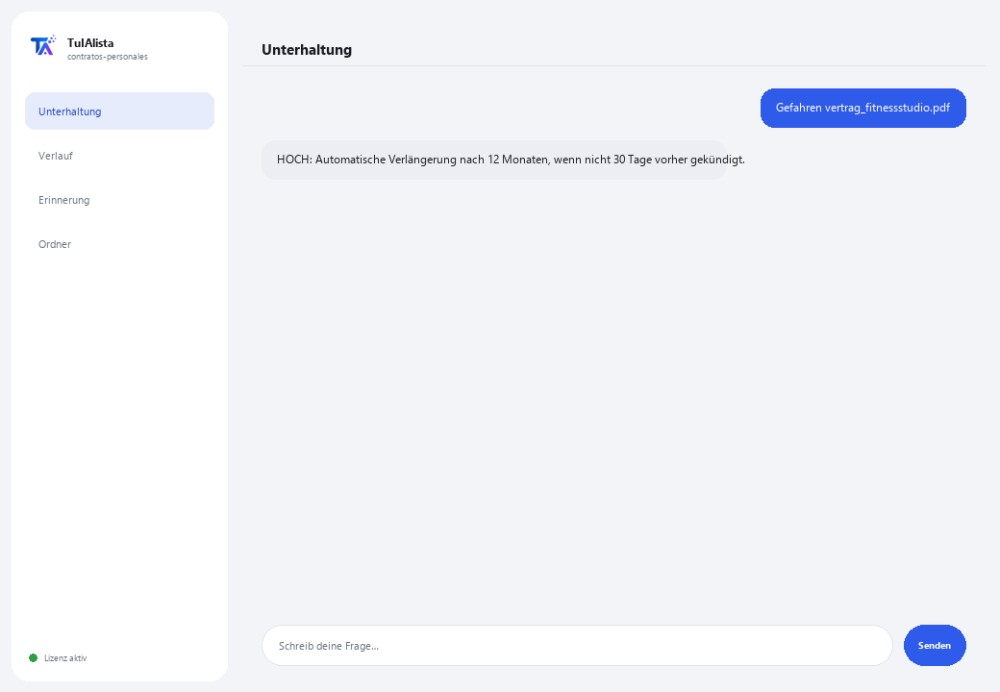

Agent für persönliche Verträge
Erklärt Ihnen in einfachen Worten jeden Vertrag, den Sie unterschreiben wollen, und warnt Sie vor Klauseln, die Ihnen schaden könnten.
Was löst er und was brauchen Sie?
Ein Anwalt verlangt zwischen 100 und 300 USD für die Prüfung eines Vertrags. Dieser Agent macht es sofort, so oft Sie möchten, mit voller Privatsphäre, für die alltäglichen Verträge: Miete, Telefonie, Fitnessstudio, Kredit, eine Arbeitsstelle.
- Sie brauchen: Ihren Lizenzschlüssel (TIA-XXXX-XXXX-XXXX-XXXX) und den Vertrag (oder den Ordner mit Ihren Verträgen). Kein Python, keine technischen Kenntnisse.
- Erstes Ergebnis in weniger als 5 Minuten: Sie installieren, aktivieren, laden Ihren Vertrag mit laden und führen Gefahren aus, um zu sehen, welche Klauseln zu prüfen sind.
- Ihr Vertrag verlässt nie Ihren Computer — die Analyse läuft lokal.
soporte@tuialista.com oder besuche tuialista.com/soporte — wir antworten normalerweise am selben Werktag.1 Was dieser Agent tut
Sie zeigen ihm den Vertrag (oder den Ordner mit Ihren Verträgen) und er:
- Erklärt ihn in Alltagssprache: was Sie unterschreiben, wozu Sie sich verpflichten, wie viel Sie zahlen und für wie lange.
- Erkennt gefährliche Klauseln für Verbraucher (automatische Verlängerung, erzwungene Mindestlaufzeit, Strafen, einseitige Preiserhöhungen, versteckte Gebühren, Lastschriftverfahren, Datenweitergabe, hohe Zinsen...).
- Listet Ihre konkreten Pflichten auf (was Sie tun müssen, wann und wie viel).
- Extrahiert alle Kosten und schätzt die Gesamtkosten, wenn Sie den gesamten Vertrag erfüllen.
- Erklärt wie und wann Sie kündigen können und was es Sie kostet.
- Schlägt Fragen vor, die Sie vor der Unterschrift stellen sollten.
Ergebnis: Sie unterschreiben und verstehen wirklich, was Sie akzeptieren.
2 Installation (2 Minuten)
Für Windows. Keine dauerhafte Internetverbindung nötig, nichts wird in die Cloud hochgeladen.
Laden Sie das Installationsprogramm von tuialista.com/descargar herunter (Agent für persönliche Verträge) und öffnen Sie es. Es erstellt eine Verknüpfung mit dem Logo auf Ihrem Desktop — kein Python oder Terminal erforderlich.
Doppelklicken Sie auf das neue Symbol. Fügen Sie Ihren Lizenzschlüssel ein (er wurde Ihnen beim Kauf per E-Mail zugesandt) und klicken Sie auf Aktivieren. Sie sehen ein grünes Häkchen, wenn er gültig ist.
Wählen Sie den Ordner mit Ihren Verträgen aus und klicken Sie auf Agent jetzt verwenden. Beim nächsten Mal startet er direkt — er merkt sich Ihren Schlüssel und Ihren Ordner.
3 So verwenden Sie ihn
Der Agent öffnet ein Chat-Fenster, wie eine Messaging-App — kein schwarzer Programmierer-Bildschirm. Sie laden zuerst den Vertrag und schreiben dann jede Anfrage in dasselbe Textfeld:

> laden <Datei>Lädt den Vertrag. Danach können Sie die anderen Befehle mit diesem Vertrag verwenden. Z. B.: laden vertrag_fitnessstudio.pdf.
> erklären <Datei>Die klare Erklärung: was der Vertrag ist, wozu Sie sich verpflichten, was Ihnen zusätzlich berechnet werden kann, wann er endet und wie man aussteigt.
> Gefahren <Datei>Klauseln, die Ihnen schaden können, klassifiziert nach Stufe (HOCH / MITTEL), mit dem Vertragsauszug, wo sie erscheinen. Es ist die einzige Aktion, die zu 100 % lokal funktioniert, ohne KI.
> Pflichten <Datei>Konkrete Liste: was, wann und wie viel (z. B.: “699 USD monatlich in den ersten 5 Tagen jedes Monats für 12 Monate zahlen”).
> Kosten <Datei>Monatsbeitrag, Anmeldung, Kautionen, Strafen, Zinsen, Umsatzsteuer... und die geschätzten Gesamtkosten, wenn Sie den gesamten Vertrag erfüllen.
> kündigen <Datei>Ob Sie jederzeit kündigen können oder es eine Mindestlaufzeit gibt, wie man kündigt, wie viel Vorlauf nötig ist und was Ihnen berechnet wird.
> Fragen <Datei>Konkrete Fragen, die Sie vor der Unterschrift stellen sollten.
> freie Frage?Mit einem geladenen Vertrag fragen Sie, was Sie möchten, z. B.: können sie meinen Monatsbeitrag während der Vertragslaufzeit erhöhen?
> beendenBeendet die Sitzung (funktioniert auch mit exit).
4 Beispiele für häufige Anwendungen
Vor der Unterschrift eines Fitnessstudio-Vertrags
laden vertrag_fitnessstudio.pdf → erklären vertrag_fitnessstudio.pdf → Gefahren vertrag_fitnessstudio.pdf
Einen Kredit verstehen
Kosten vertrag_kredit.pdf → kündigen vertrag_kredit.pdf
Sich mit Fragen vorbereiten
Fragen mietvertrag.pdf
Eine punktuelle Frage
was passiert, wenn ich vor Ablauf der 18 Monate aussteigen möchte?
5 Häufig gestellte Fragen
Wird mein Vertrag ins Internet hochgeladen?
Welche Formate akzeptiert er?
Ersetzt das einen Anwalt?
Wie erkennt er die gefährlichen Klauseln?
Sind die berechneten Gesamtkosten exakt?
Speichert er meine Verträge?
In welcher Sprache antwortet er?
Liest er ein gescanntes PDF?
Kann ich mehrere Verträge analysieren?
Verändert er meinen Vertrag?
6 Problemlösung
Ein .pdf oder .docx wird nicht gelesen
Meldet, dass der Vertrag nicht gelesen werden konnte
Eine Klausel, die vorhanden ist, wird nicht erkannt
Zeigt “Lizenz ungültig” oder fordert erneute Verbindung
“Keine KI-Anbieter konfiguriert”
Keine dieser Lösungen hat Ihr Problem behoben? Schreiben Sie uns direkt — wir schauen es uns gerne gemeinsam mit Ihnen an.
soporte@tuialista.com oder besuche tuialista.com/soporte — wir antworten normalerweise am selben Werktag.7 Datenschutz und Vertraulichkeit
Ihr Vertrag verlässt nie Ihren Computer.
- Der Agent liest und analysiert den Vertrag lokal, auf Ihrem eigenen Gerät. Er lädt ihn auf keinen Server hoch und teilt ihn mit niemandem.
- Die Erkennung gefährlicher Klauseln (Gefahren) erfolgt zu 100 % auf Ihrem Gerät.
- Das Einzige, was über das Internet läuft, ist: (1) eine Überprüfung, dass Ihre Lizenz aktiv ist — die Ihren Vertrag nicht enthält —, und (2) bei Erklärungen und Fragen wird ein Ausschnitt des Vertrags (bis zu etwa 7.000 Zeichen) an die KI-Engine gesendet, um die Antwort zu verfassen.